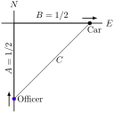
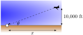
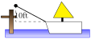

When two quantities are related by an equation, knowing the value of one quantity can determine the value of the other. For instance, the circumference and radius of a circle are related by \(C=2\pi r\text{;}\) knowing that \(C\) is 6\(\pi\) in determines the radius must be 3 in.
But what if both variables are changing with time? If we know how two variables are related and we know how one of them changes with time, can we find how the other variable changes with time?
The topic of related rates allows us to answer this question: knowing the rate at which one quantity is changing can determine the rate at which another changes.
Remark4.2.1.
This section relies heavily on implicit differentiation, so referring back to Section 2.6 may help.
We demonstrate the concepts of related rates through examples.
Example4.2.2.Understanding related rates.
The radius of a circle is growing at a rate of 5 in⁄h. At what rate is the circumference growing?
The circumference and radius of a circle are related by \(C = 2\pi r\text{.}\) We are given information about how the length of \(r\) changes with respect to time; that is, we are told \(\lz{r}{t}\) is 5 in⁄h. We want to know how the length of \(C\) changes with respect to time, i.e., we want to know \(\lz{C}{t}\text{.}\)
Implicitly differentiate both sides of \(C = 2\pi r\) with respect to \(t\text{:}\)
In related rates problems, we will be presented with an application problem that involves two or more variables and one or more rate. It is the job of the reader to construct the appropriate model that can be used to answer the posed question. Key Idea 4.2.3 outlines the basic steps for solving a related rates problem.
Key Idea4.2.3.Related Rates.
Read the problem carefully and identify the quantities that are changing with time. (There may be many quantities that change with time, try to identify which variables are important to your goal and only focus on these quantities.)
Draw a diagram (if applicable) and assign mathematical variables to each quantity that is changing with time. (If you are given a particular value of a quantity that is also changing with time, do not include these values on your diagram. We will call these “instantaneous values” of the variable.)
Relate the important variables using a mathematical model. (Typical models are known formulas for area, perimeter, the Pythagorean Theorem or Trigonometric Ratios.) It may be necessary to use more than one technique (such as similar triangles) to reduce your model down to one that only involves the variables of interest.
Implicitly differentiate both sides of the equation found in Step 3 with respect to \(t\text{.}\)
Substitute in the known values of rates and known instantaneous values of the variables.
Solve for the unknown rate.
Write a full sentence conclusion.
Consider another, similar example.
Example4.2.4.Finding related rates.
Water streams out of a faucet at a rate of 2 in3⁄s onto a flat surface at a constant rate, forming a circular puddle that is 1/8 in deep.
We can answer this question two ways: using “common sense” or related rates. The common sense method states that the volume of the puddle is growing by 2 in3⁄s, where
\begin{equation*}
\text{volume of puddle}=\text{area of circle}\times\text{depth}\text{.}
\end{equation*}
Since the depth is constant at 1/8 in, the area must be growing by 16 in2⁄s since \(16\cdot \frac{1}{8}=2\text{.}\) This approach reveals the underlying related rates principle.
Now let's solve the problem using Key Idea 4.2.3. Based on the problem description, the quantities that change with time are the volume of water (the volume of the puddle), the area of the circular puddle and the radius of the circle. We don't need a diagram for this problem. The important variables for this part of the problem are the volume and area.
Let \(V\) and \(A\) represent the Volume and Area of the puddle. We know \(V= A\times \frac{1}{8}\text{.}\) Take the derivative of both sides with respect to \(t\text{,}\) employing implicit differentiation.
We know the change in volume, \(\lz{V}{t} = 2\text{,}\) so we substitute this value into our related rates equation: \(2 = \frac{1}{8}\lz{A}{t}\text{,}\) and hence \(\lz{A}{t} = 16\text{.}\) Thus the area is growing by 16 in2⁄s.
We already identified the quantities that are changing in Part 1. The variables of interest in this problem are the radius and the volume. We need an equation that relates the volume of the circle to the radius. Since the puddle is a right circular cylinder, we will use a known volume formula, \(V=\pi r^2 h\) where \(V\) is the volume of the puddle (in in3, \(r\) is the radius (in inches) and \(h\) is the height (i.e. depth) of the puddle in inches. (Notice that this formula is equivalent to \(V=\text{area} \times \text{depth}\text{.}\)) We know that the height (depth) is a constant \(1/8\) inch. Since this quantity does not change in the problem, we can safely substitute this value now.
Implicitly derive both sides of \(V=\pi r^2 \frac{1}{8}\) with respect to \(t\text{:}\)
Note how our answer is not a number, but rather a function of \(r\text{.}\) In other words, the rate at which the radius is growing depends on how big the circle already is. If the circle is very large, adding 2 in3⁄s of water will not make the circle much bigger at all. If the circle is dime-sized, adding the same amount of water will make a radical change in the radius of the circle.
In some ways, our problem was (intentionally) ill-posed. We need to specify a current (instantaneous) value of the radius in order to know a rate of change. When the puddle has a radius of 10 in, the radius is growing at a rate of
Radar guns measure the rate of distance change between the gun and the object it is measuring. For instance, a reading of “55 mph” means the object is moving away from the gun at a rate of \(55\) miles per hour, whereas a measurement of “-25 mph” would mean that the object is approaching the gun at a rate of \(25\) miles per hour.
If the radar gun is moving (say, attached to a police car) then radar readouts are only immediately understandable if the gun and the object are moving along the same line. If a police officer is traveling 60 mph and gets a readout of 15 mph, he knows that the car ahead of him is moving away at a rate of \(15\) miles an hour, meaning the car is traveling 75 mph. (This straight-line principle is one reason officers park on the side of the highway and try to shoot straight back down the road. It gives the most accurate reading.)
Suppose an officer is driving due north at 30 mph and sees a car moving due east, as shown in Figure 4.2.6. Using his radar gun, he measures a reading of 20 mph. By using landmarks, he believes both he and the other car are about \(1/2\) mile from the intersection of their two roads.

Figure4.2.6.A sketch of a police car (at bottom) attempting to measure the speed of a car (at right) in Example 4.2.5
If the speed limit on the other road is 55 mph, is the other driver speeding?
The important quantities that are changing are: the distance of the officer to the intersection, the distance of the car to the intersection, and the distance of the officer to the car. (There are other quantities that are changing as well such as the angles and area of the triangle, but these are not important to this problem.)
Using the diagram in Figure 4.2.6, let's label what we know about the situation. As both the police officer and other driver are \(1/2\) mile from the intersection, we have \(A = 1/2\text{,}\)\(B = 1/2\text{,}\) and through the Pythagorean Theorem, \(C = 1/\sqrt{2}\approx 0.707\text{.}\) These values are “instantaneous” values for our variables, so we won't use them until the end of the problem. Instead, we will use the variables \(A\text{,}\)\(B\text{,}\) and \(C\text{.}\)
We need an equation that relates \(A\text{,}\)\(B\text{,}\) and \(C\text{.}\) The Pythagorean Theorem is a good choice: \(A^2+B^2 = C^2\text{.}\) Differentiate both sides with respect to \(t\text{:}\)
We know the police officer is traveling at 30 mph; that is, \(\lz{A}{t} = -30\text{.}\) The reason this rate of change is negative is that \(A\) is getting smaller; the distance between the officer and the intersection is shrinking. The radar measurement is \(\lz{C}{t} = 20\text{.}\) We want to find \(\lz{B}{t}\text{.}\)
We have values for everything except \(\lz{B}{t}\text{.}\) Solving for this we have:
A camera is placed on a tripod 10 ft from the side of a road. The camera is to turn to track a car that is to drive by at 100 mph for a promotional video. The video's planners want to know what kind of motor the tripod should be equipped with in order to properly track the car as it passes by. Figure 4.2.8 shows the proposed setup.
Figure4.2.8.Tracking a speeding car (at left) with a rotating camera
How fast must the camera be able to turn to track the car?
The quantities that changing are \(x\) and \(\theta\) as drawn on Figure 4.2.8. (The hypotenuse of the triangle is also changing, but this isn't important to the problem). We seek information about how fast the camera is to turn; therefore, we need an equation that will relate an angle \(\theta\) to the position of the camera and the speed and position of the car.
Figure 4.2.8 suggests we use a trigonometric equation. Letting \(x\) represent the distance the car is from the point on the road directly in front of the camera, we have
As the car is moving at 100 mph, we have that \(\lz{x}{t}\) is -100 mph (as in the last example, since \(x\) is getting smaller as the car travels, \(\lz{x}{t}\) is negative). We need to convert the measurements so they use the same units (we chose ft); rewrite -100 mph in terms of ft⁄s:
We want to know the fastest the camera has to turn. Common sense tells us this is when the car is directly in front of the camera (i.e., when \(\theta = 0\)). Our mathematics bears this out. In Equation (4.2.2) we see this is when \(\cos^2(\theta)\) is largest; this is when \(\cos(\theta) = 1\text{,}\) or when \(\theta = 0\text{.}\) We also know that we should get an answer that is in rad⁄s. Since \(\cos(\theta)\) is a “dimensionless” measure, it won't contribute to the units. However, radians are also dimensionless. This means we can write (or erase) the word “radian” without any unit consequences. (The same is not true of degrees — always convert degress to radians).
With \(\lz{x}{t}\) approximately -146.7 ft⁄s, we have
We find that \(\lz{\theta}{t}\) is negative; this matches our diagram in Figure 4.2.8 for \(\theta\) is getting smaller as the car approaches the camera.
What is the practical meaning of -14.667 rad⁄s? Recall that \(1\) circular revolution goes through \(2\pi\) radians, thus 14.667 rad⁄s means \(14.667/(2\pi)\approx 2.33\) revolutions per second. The negative sign indicates the camera is rotating in a clockwise fashion.
We introduced the derivative as a function that gives the slopes of tangent lines of functions. This chapter emphasizes using the derivative in other ways. Newton's Method uses the derivative to approximate roots of functions; this section stresses the “rate of change” aspect of the derivative to find a relationship between the rates of change of two related quantities.
In the next section we use Extreme Value concepts to optimize quantities.
ExercisesExercises
Terms and Concepts
1.
True
False
Implicit differentiation is often used when solving “related rates” type problems.
2.
True
False
A study of related rates is part of the standard police officer training.
Problems
3.
Water flows onto a flat surface at a rate of \({10\ {\textstyle\frac{\rm\mathstrut cm^{3}}{\rm\mathstrut s}}}\) forming a circular puddle \({6\ {\rm mm}}\) deep. How fast is the radius growing when the radius is:
\(\displaystyle {1\ {\rm cm}}\)
\(\displaystyle {10\ {\rm cm}}\)
\(\displaystyle {100\ {\rm cm}}\)
4.
A spherical balloon is inflated with air flowing at a rate of \({12\ {\textstyle\frac{\rm\mathstrut cm^{3}}{\rm\mathstrut s}}}\text{.}\) How fast is the radius of the balloon increasing when the radius is:
\(\displaystyle {1\ {\rm cm}}\)
\(\displaystyle {10\ {\rm cm}}\)
\(\displaystyle {100\ {\rm cm}}\)
5.
Consider the traffic situation introduced in Example 4.2.7. How fast is the “other car” traveling if the officer and the other car are each \({{\frac{1}{2}}}\) mile from the intersection, the other car is traveling due west, the officer is traveling north at \(55\,\text{mph}\text{,}\) and the radar reading is \(-90\,\text{mph}\text{?}\)
6.
Consider the traffic situation introduced in Example 4.2.7. Calculate how fast the “other car” is traveling in each of the following situations.
The officer is traveling due north at \(50\,\text{mph}\) and is \({{\frac{3}{4}}}\) mile from the intersection, while the other car is \(1\) mile from the intersection traveling west and the radar reading is \(-75\,\text{mph}\text{?}\)
The officer is traveling due north at \(50\,\text{mph}\) and is \(1\) mile from the intersection, while the other car is \({{\frac{3}{4}}}\) mile from the intersection traveling west and the radar reading is \(-75\,\text{mph}\text{?}\)
7.
An F-22 aircraft is flying at \(500\,\text{mph}\) with an elevation of \(10{,}000\,\text{ft}\) on a straight-line path that will take it directly over an anti-aircraft gun.

How fast must the gun be able to turn to accurately track the aircraft when the plane is:
\(1\) mile away?
\(1/5\) mile away?
Directly overhead?
8.
An F-22 aircraft is flying at 450 mi/h with an elevation of \(100\,\text{ft}\) on a straight-line path that will take it directly over an anti-aircraft gun as in Exercise 4.2.7 (note the lower elevation here).
How fast must the gun be able to turn to accurately track the aircraft when the plane is:
\({2000\ {\rm ft}}\) feet away?
\({400\ {\rm ft}}\) feet away?
Directly overhead?
9.
A 24 ft ladder is leaning against a house while the base is pulled away at a constant rate of 1 ft⁄s.
At what rate is the top of the ladder sliding down the side of the house when the base is:
\(1\) foot from the house?
\(10\) feet from the house?
\(23\) feet from the house?
\(24\) feet from the house?
10.
A boat is being pulled into a dock at a constant rate of 30 ft⁄min by a winch located 10 ft above the deck of the boat.

At what rate is the boat approaching the dock when the boat is:
\(50\) feet out?
\(15\) feet out?
\(1\) foot from the dock?
11.
An inverted cylindrical cone, \({19\ {\rm ft}}\) deep and \({23\ {\rm ft}}\) across at the top, is being filled with water at a rate of \({8\ {\textstyle\frac{\rm\mathstrut ft^{3}}{\rm\mathstrut s}}}\text{.}\) At what rate is the water rising in the tank when the depth of the water is:
\(1\) foot?
\(11\) feet?
\(19\) feet?
How long will the tank take to fill when starting at empty?
12.
A rope, attached to a weight, goes up through a pulley at the ceiling and back down to a worker. The man holds the rope at the same height as the connection point between rope and weight.
Suppose the man stands directly next to the weight (i.e., a total rope length of \(60\) feet) and begins to walk away at a rate of 2 ft⁄s. How fast is the weight rising when the man has walked:
\(10\) feet?
\(40\) feet?
How far must the man walk to raise the weight all the way to the pulley?
13.
Consider the situation described in Exercise 4.2.12. Suppose the man starts \({40\ {\rm ft}}\) from the weight and begins to walk away at a rate of \({2\ {\textstyle\frac{\rm\mathstrut ft}{\rm\mathstrut s}}}\text{.}\)
How long is the rope?
How fast is the weight rising after the man has walked \(10\) feet?
How fast is the weight rising after the man has walked \(30\) feet?
How far must the man walk to raise the weight all the way to the pulley?
14.
A hot air balloon lifts off from ground rising vertically. From \(105\) feet away, a \({6\ {\rm ft}}\) tall woman tracks the path of the balloon. When her sightline with the balloon makes a \(45^\circ\) angle with the horizontal, she notes the angle is increasing at about \(8^\circ\) per minute.
What is the elevation of the balloon?
How fast is it rising?
15.
A company that produces landscaping materials is dumping sand into a conical pile. The sand is being poured at a rate of \({7\ {\textstyle\frac{\rm\mathstrut ft^{3}}{\rm\mathstrut s}}}\text{.}\) The physical properties of the sand, in conjunction with gravity, ensure that the cone’s height is roughly \({{\frac{5}{6}}}\) the length of the diameter of the circular base.
How fast is the cone rising when it has a height of \(30\) feet?